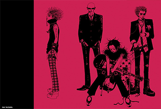

Cancionero | |
|
|
Zero hen I was darkness at that time When I was darkness at that time 震えてる唇 furuiteru kuchibiru 部屋の片隅で I cry heya no katasumi de I cry もがけばもがくほど mogakeba magaku hodo 突き刺さるこの傷 tsukisasaru kono kizu 破られた約束 could hurt me yaburareta yakusoku could hurt meNobody can save me Nobody can save me 神様 一つだけ kami-sama hitotsu dake 止めて 裂くような my love yamete saku you na my love I need your love I need your love I'm a broken rose I'm a broken rose 舞い散る悲しみ your song maichiru kanashimi your song 居場所無い 孤独な my life ibasho nai kodoku na my life I need your love I need your love I'm a broken rose I'm a broken rose Oh baby, help me from frozen pain Oh baby, help me from frozen pain Your smile, your eyes and sing me, just for me Your smile, your eyes and sing me, just for me I wanna need your love I wanna need your love I'm a broken rose I'm a broken rose I wanna need your love I wanna need your love
Zero
|